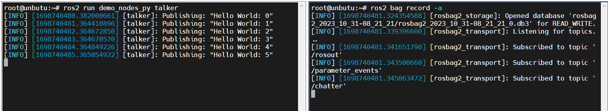
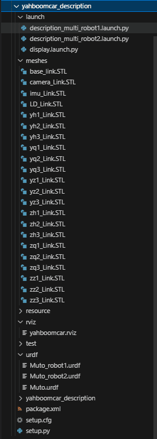
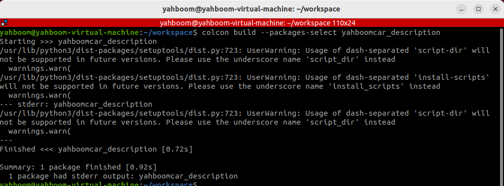
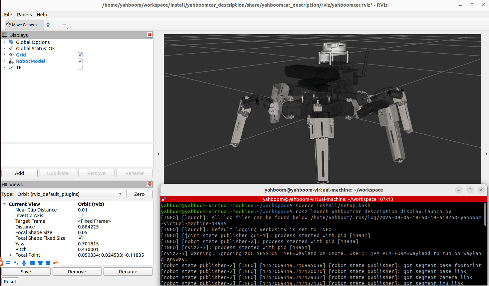
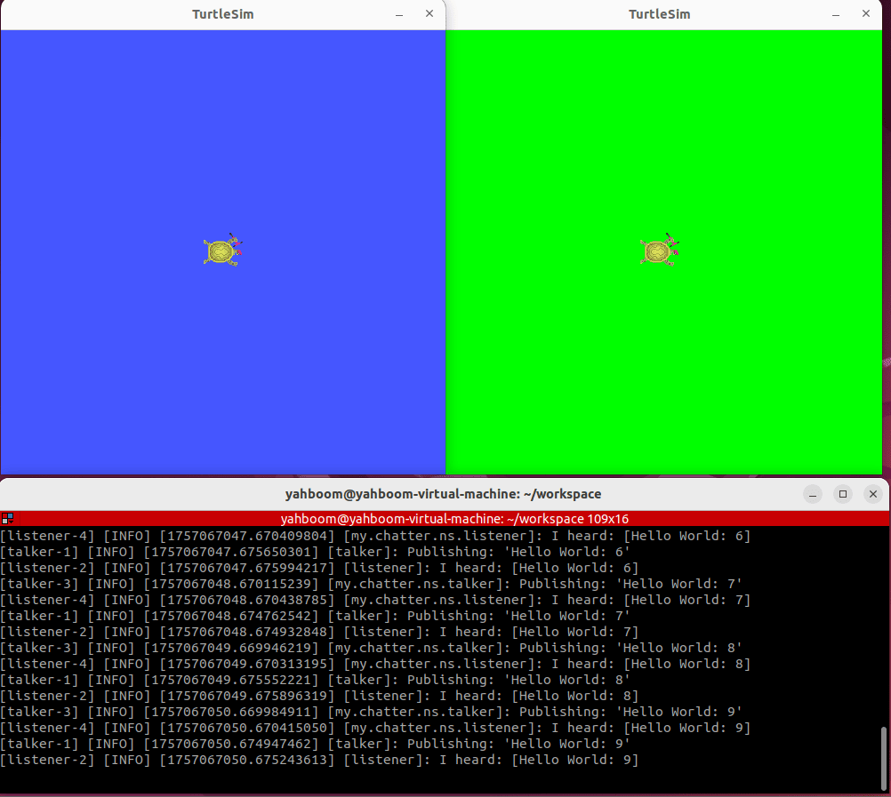
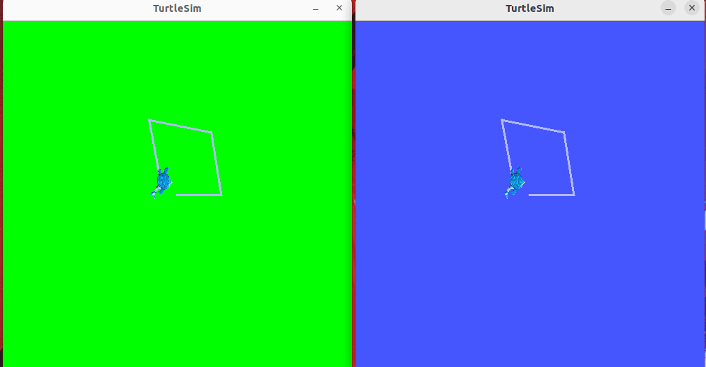
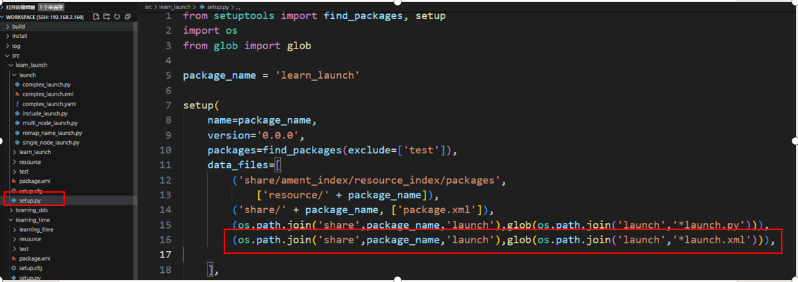
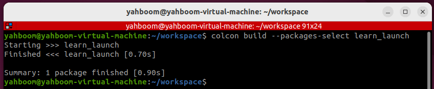
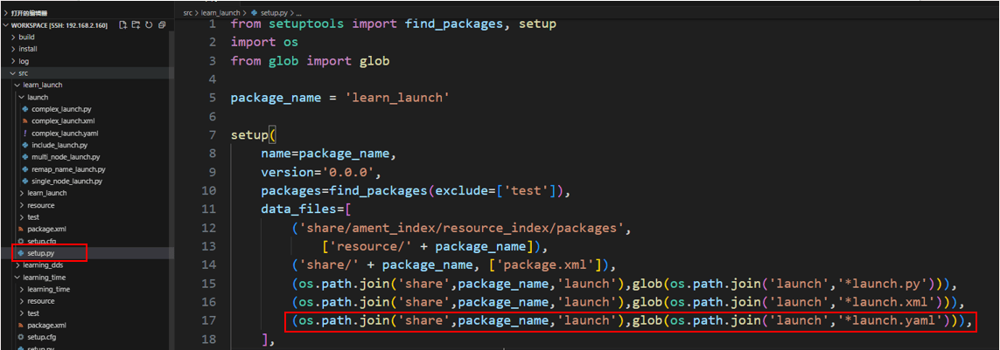

19. Настройка файла запуска (launch) в ROS2
1. Введение в Launch
До сих пор каждый раз, когда мы запускали ноду ROS, нам приходилось открывать новый терминал и выполнять команду. Когда в робототехнической системе много нод, делать это каждый раз становится обременительно. Есть ли способ запустить все ноды одновременно? Ответ, конечно, — файл запуска (launch file), скрипт, который запускает и настраивает несколько нод в системе ROS.
В ROS2 launch используется для запуска нескольких нод и настройки параметров программы. Файлы запуска ROS2 доступны в форматах XML, YAML и Python. В этом уроке в качестве примера используется файл запуска на Python. По сравнению с двумя другими форматами, формат Python более гибкий:
- В Python есть множество библиотек функций, которые можно использовать в файлах запуска;
- Общие и специфические функции запуска ROS2 написаны на Python, что даёт доступ к возможностям запуска, которые могут быть не доступны в XML и YAML;
Ключ к написанию файлов запуска ROS2 на Python — это абстрагирование каждой ноды, файла, скрипта и т.д. в действие (action), запускаемое через единый интерфейс.
Ссылки:
- Документ о проектировании системы запуска: Launch System Design Document — ROS 2 Launch System
- Официальная документация API Launch: Architecture of launch — launch 0.4.0 documentation
- Подготовка: создайте пакет для хранения файлов программы
ros2 pkg create learn_launch --build-type ament_python
2. Написание программы запуска для одной ноды
2.1. Создание файла запуска
Создайте папку launch в пакете, затем создайте в этой папке файл [single_node_launch.py]. Скопируйте в него следующее содержимое:
from launch import LaunchDescription
from launch_ros.actions import Node
def generate_launch_description():
node = Node(
package='pkg_helloworld_py',
executable='helloworld',
output='screen'
)
return LaunchDescription([node])
2.2 Настройка файла setup.py
Файл запуска часто называют "LaunchName_launch.py". LaunchName можно задать произвольно, а _launch.py считается фиксированной частью. Необходимо изменить файл setup.py в пакете, добавив путь launch и скомпилировав его для генерации исполняемого файла .py.
#1. Import related header files
import os
from glob import glob
#2. In the data_files list, add the launch path and the launch.py ••file under
the path
(os.path.join('share',package_name,'launch'),glob(os.path.join('launch','*launch
.py')))


2.3. Компиляция пакета
colcon build --packages-select learn_launch
2.4. Запуск программы
- Обновите переменные окружения и запустите файл запуска
ros2 launch learn_launch single_node_launch.py
2.5. Анализ исходного кода
- Импорт соответствующих библиотек
from launch import LaunchDescription
from launch_ros.actions import Node
- Определяем функцию generate_launch_description и возвращаем launch_description.
def generate_launch_description():
node = Node(
package='pkg_helloworld_py',
executable='helloworld',
)
return LaunchDescription([node])
Мы определяем переменную node как результат запуска ноды. Затем вызываем функцию Node с двумя важными параметрами: package и executable.
- package: представляет имя пакета.
- executable: представляет имя исполняемой программы.
Наконец, мы вызываем функцию LaunchDescription, передавая параметр node, и выполняем функцию.


3. Написание программы запуска для нескольких нод
3.1. Создание файла запуска
Создайте новый файл [multi_node_launch.py] и добавьте следующее содержимое:
from launch import LaunchDescription
from launch_ros.actions import Node
def generate_launch_description():
publisher_node = Node(
package='pkg_topic',
executable='publisher_demo',
output='screen'
)
subscriber_node = Node(
package='pkg_topic',
executable='subscriber_demo',
output='screen'
)
return LaunchDescription([
publisher_node,
subscriber_node
])
3.2. Компиляция пакета
colcon build --packages-select learn_launch
3.3. Запуск программы
- Обновите переменные окружения и запустите файл запуска.
ros2 launch learn_launch multi_node_launch.py

Если терминал ничего не выводит, мы можем убедиться в успешном запуске нод, проверив, какие ноды запустились. В терминале введите:
ros2 node list
3.4 Анализ исходного кода
Аналогично simple_node_launch.py, за исключением ещё одной ноды.
4 Пример переназначения (remapping) топика
4.1 Создание нового файла запуска
Создайте новый файл [remap_name_launch.py] в той же директории, что и multi_node_launch.py, и добавьте следующее содержимое:
from launch import LaunchDescription
from launch_ros.actions import Node
def generate_launch_description():
publisher_node = Node(
package='pkg_topic',
executable='publisher_demo',
output='screen',
remappings=[("/topic_demo", "/topic_update")]
)
return LaunchDescription([
publisher_node
])


4.2. Компиляция пакета
colcon build --packages-select learn_launch
4.3. Запуск программы
Сначала посмотрим, какие топики публикует нода publisher_demo до переназначения топиков:
ros2 launch learn_launch multi_node_launch.py
ros2 topic list
Здесь топик — [/topic_demo]
- Снова обновите переменные окружения и запустите программу после переназначения топика, чтобы увидеть изменения:
ros2 launch learn_launch remap_name_launch.py
ros2 topic list


Как показано выше, имя топика было переназначено на [/topic_update]
4.4 Анализ исходного кода
Был добавлен следующий раздел:
remappings=[("/topic_demo", "/topic_update")]
Здесь исходный топик /topic_demo переназначается на /topic_update
5. Пример запуска другого файла запуска из вложенного файла запуска
5.1. Создание нового файла запуска
Создайте новый файл [include_launch.py] в той же директории, что и multi_node_launch.py, и добавьте следующее содержимое:
from launch import LaunchDescription
from launch_ros.actions import Node
import os
from launch.actions import IncludeLaunchDescription
from launch.launch_description_sources import PythonLaunchDescriptionSource
from ament_index_python.packages import get_package_share_directory
def generate_launch_description():
hello_launch = IncludeLaunchDescription(PythonLaunchDescriptionSource(
[os.path.join(get_package_share_directory('learn_launch'), 'launch'),
'/multi_node_launch.py']),
)
return LaunchDescription([
hello_launch
])

5.2. Компиляция пакета функций
colcon build --packages-select learn_launch
5.3. Запуск программы
- Обновите переменные окружения и запустите файл запуска
ros2 launch learn_launch include_launch.py
5.4. Анализ исходного кода
- Для вложенных файлов запуска необходимо использовать классы IncludeLaunchDescription и PythonLaunchDescriptionSource системы launch.
- os.path.join(get_package_share_directory('learn_launch')): получает расположение пакета, где 'learn_launch' — имя пакета;
- launch): указывает папку, в которой хранится файл запуска внутри пакета;
- /multi_node_launch.py: указывает файл /multi_node_launch.py в папке launch пакета.
6. Комплексный пример файла запуска
Этот пример в первую очередь демонстрирует, как писать сложный файл запуска; функциональность самой программы не учитывается.
6.1. Создание нового файла запуска
Создайте новый файл [complex_launch.py] в той же директории, что и [multi_node_launch.py], и добавьте следующее содержимое:
import os
from ament_index_python import get_package_share_directory
from launch import LaunchDescription
from launch.actions import DeclareLaunchArgument


from launch.actions import IncludeLaunchDescription
from launch.actions import GroupAction
from launch.launch_description_sources import PythonLaunchDescriptionSource
from launch.substitutions import LaunchConfiguration
from launch.substitutions import TextSubstitution
from launch_ros.actions import Node
from launch_ros.actions import PushRosNamespace
def generate_launch_description():
# args that can be set from the command line or a default will be used
background_r_launch_arg = DeclareLaunchArgument(
"background_r", default_value=TextSubstitution(text="0")
)
background_g_launch_arg = DeclareLaunchArgument(
"background_g", default_value=TextSubstitution(text="255")
)
background_b_launch_arg = DeclareLaunchArgument(
"background_b", default_value=TextSubstitution(text="0")
)
chatter_ns_launch_arg = DeclareLaunchArgument(
"chatter_ns", default_value=TextSubstitution(text="my/chatter/ns")
)
# include another launch file
launch_include = IncludeLaunchDescription(
PythonLaunchDescriptionSource(
os.path.join(
get_package_share_directory('demo_nodes_cpp'),
'launch/topics/talker_listener.launch.py'))
)
# include another launch file in the chatter_ns namespace
launch_include_with_namespace = GroupAction(
actions=[
# push-ros-namespace to set namespace of included nodes
PushRosNamespace(LaunchConfiguration('chatter_ns')),
IncludeLaunchDescription(
PythonLaunchDescriptionSource(
os.path.join(
get_package_share_directory('demo_nodes_cpp'),
'launch/topics/talker_listener.launch.py'))
),
]
)
# start a turtlesim_node in the turtlesim1 namespace
turtlesim_node = Node(
package='turtlesim',
namespace='turtlesim1',
executable='turtlesim_node',
name='sim'
)
# start another turtlesim_node in the turtlesim2 namespace
# and use args to set parameters
turtlesim_node_with_parameters = Node(
package='turtlesim',
namespace='turtlesim2',
executable='turtlesim_node',
name='sim',
parameters=[{
"background_r": LaunchConfiguration('background_r'),
"background_g": LaunchConfiguration('background_g'),
"background_b": LaunchConfiguration('background_b'),
}]
)
# perform remap so both turtles listen to the same command topic
forward_turtlesim_commands_to_second_turtlesim_node = Node(
package='turtlesim',
executable='mimic',
name='mimic',
remappings=[
('/input/pose', '/turtlesim1/turtle1/pose'),
('/output/cmd_vel', '/turtlesim2/turtle1/cmd_vel'),
]
)
return LaunchDescription([
background_r_launch_arg,
background_g_launch_arg,
background_b_launch_arg,
chatter_ns_launch_arg,
launch_include,
launch_include_with_namespace,
turtlesim_node,
turtlesim_node_with_parameters,
forward_turtlesim_commands_to_second_turtlesim_node,
])
6.2. Компиляция рабочего пространства
colcon build --packages-select learn_launch
6.3. Запуск программы
- Обновите переменные окружения в терминале и запустите файл запуска.
ros2 launch learn_launch complex_launch.py
На хост-машине в VNC появятся две черепахи.

Запустите ноду клавиатурного управления и добавьте пространство имён (namespace) (так как мы добавили пространство имён при запуске ноды в файле запуска).
ros2 run turtlesim turtle_teleop_key --ros-args -r __ns:=/turtlesim1
- Используйте клавиши вверх, вниз, влево и вправо для управления движением черепахи 1. Черепаха 2 будет полностью повторять поведение черепахи 1.


6.4. Описание программы
Программа в основном запускает:
- Ноду talker_listener из demo_nodes_cpp
- Ноду talker_listener с пространством имён
- Черепаху 1, которой присвоено пространство имён turtlesim1
- Черепаху 2, которой присвоено пространство имён turtlesim2
- Выполняет переназначение, чтобы обе черепахи слушали один и тот же командный топик
7. Реализация в XML
7.1. Создание файла запуска
Создайте файл [complex_launch.xml] в той же директории, что и complex_launch.py, и добавьте следующее содержимое:
<launch>
<!-- args that can be set from the command line or a default will be used -->
<arg name="background_r" default="0"/>
<arg name="background_g" default="255"/>
<arg name="background_b" default="0"/>
<arg name="chatter_ns" default="my/chatter/ns"/>
<!-- include another launch file -->
<include file="$(find-pkg-share
demo_nodes_cpp)/launch/topics/talker_listener.launch.py"/>
<!-- include another launch file in the chatter_ns namespace-->
<group>
<!-- push-ros-namespace to set namespace of included nodes -->
<push-ros-namespace namespace="$(var chatter_ns)"/>
<include file="$(find-pkg-share
demo_nodes_cpp)/launch/topics/talker_listener.launch.py"/>
</group>
<!-- start a turtlesim_node in the turtlesim1 namespace -->
<node pkg="turtlesim" exec="turtlesim_node" name="sim"
namespace="turtlesim1"/>
<!-- start another turtlesim_node in the turtlesim2 namespace
and use args to set parameters -->
<node pkg="turtlesim" exec="turtlesim_node" name="sim"
namespace="turtlesim2">
<param name="background_r" value="$(var background_r)"/>
<param name="background_g" value="$(var background_g)"/>
<param name="background_b" value="$(var background_b)"/>
</node>
<!-- perform remap so both turtles listen to the same command topic -->
<node pkg="turtlesim" exec="mimic" name="mimic">
<remap from="/input/pose" to="/turtlesim1/turtle1/pose"/>
<remap from="/output/cmd_vel" to="/turtlesim2/turtle1/cmd_vel"/>
</node>
</launch>
7.2. Настройка файла setup.py
- Необходимо настроить файл сборки. Во время компиляции наш файл запуска .xml копируется в директорию install, чтобы система ROS могла его найти.
7.3. Компиляция пакета функций
colcon build --packages-select learn_launch
7.4. Запуск программы
Введите в терминале:
ros2 launch learn_launch complex_launch.xml
- Как и ожидалось, появятся две черепахи, а в терминале будет выведена информация журнала.


Запустите ноду клавиатурного управления и добавьте пространство имён.
ros2 run turtlesim turtle_teleop_key --ros-args -r __ns:=/turtlesim1
Используйте клавиатурное управление для запуска черепахи 1. Черепаха 2 будет полностью повторять поведение черепахи 1.
8. Реализация в YAML
8.1. Создание нового файла запуска
Создайте новый файл [complex_launch.yaml] в той же директории, что и complex_launch.py, и добавьте следующее содержимое:
launch:
# args that can be set from the command line or a default will be used
- arg:
name: "background_r"
default: "0"
- arg:
name: "background_g"
default: "255"
- arg:
name: "background_b"
default: "0"
- arg:

name: "chatter_ns"
default: "my/chatter/ns"
# include another launch file
- include:
file: "$(find-pkg-share
demo_nodes_cpp)/launch/topics/talker_listener.launch.py"
# include another launch file in the chatter_ns namespace
- group:
- push-ros-namespace:
namespace: "$(var chatter_ns)"
- include:
file: "$(find-pkg-share
demo_nodes_cpp)/launch/topics/talker_listener.launch.py"
# start a turtlesim_node in the turtlesim1 namespace
- node:
pkg: "turtlesim"
exec: "turtlesim_node"
name: "sim"
namespace: "turtlesim1"
# start another turtlesim_node in the turtlesim2 namespace and use args to set
parameters
- node:
pkg: "turtlesim"
exec: "turtlesim_node"
name: "sim"
namespace: "turtlesim2"
param:
-
name: "background_r"
value: "$(var background_r)"
-
name: "background_g"
value: "$(var background_g)"
-
name: "background_b"
value: "$(var background_b)"
# perform remap so both turtles listen to the same command topic
- node:
pkg: "turtlesim"
exec: "mimic"
name: "mimic"
remap:
-
from: "/input/pose"
to: "/turtlesim1/turtle1/pose"
-
from: "/output/cmd_vel"
to: "/turtlesim2/turtle1/cmd_vel"
8.2. Конфигурация
- Необходимо настроить файл сборки. Во время компиляции файл запуска .yaml копируется в директорию install, чтобы система ROS могла его найти.
8.3. Компиляция пакета
colcon build --packages-select learn_launch
8.4. Запуск программы
- Обновите переменные окружения и запустите
ros2 launch learn_launch complex_launch.yaml
- Как и ожидалось, появляются две маленькие черепахи, а в терминале выводится информация журнала.


Запустите ноду клавиатурного управления и добавьте пространство имён.
ros2 run turtlesim turtle_teleop_key --ros-args -r __ns:=/turtlesim1
Запустите черепаху 1 с помощью клавиатурного управления. Черепаха 2 будет полностью повторять поведение черепахи 1.